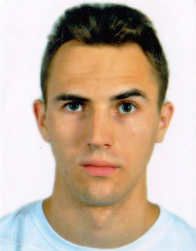

<div class="row mt-3">
  <div class="col-md-8 mx-auto">
    <div class="card text-white transparency">
      <div class="card-body">
        <h4 class="card-title">Daniel &quot;Kasztan&quot; Słowik</h4>
        <h6 class="card-subtitle mb-2 text-muted">Twórca aplikacji, programista, freeruner</h6>
        
        <br>
        <p>Absolwent kierunku Informatyka Stosowana i specjalizacji Inżynieria Oprogramowania na Uniwersytecie Ekonomicznym
          w Krakowie. Swoją przygodę z programowaniem rozpoczął 7 lat temu z roku na rok zwiększając poświęcany czas. Na
          dłużej zatrzymał się przy C++, następnie jego serce podbiła Java, ostatecznie wyparta przez Angulara. Poza programowaniem
          od prawie 10 lat realizuje się w swojej drugiej pasji jaką jest parkour/freerun trenując oraz prowadząc kanał na
          YT, warsztaty dla początkujących oraz pracując jako trener.</p>
      </div>
    </div>
  </div>
</div>
